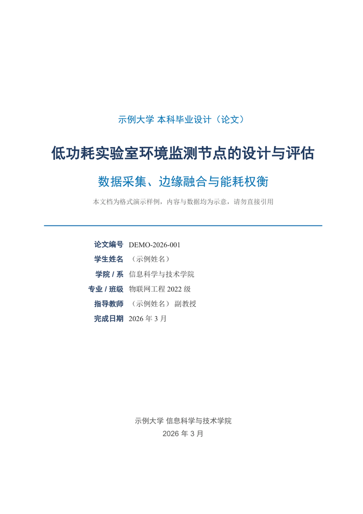
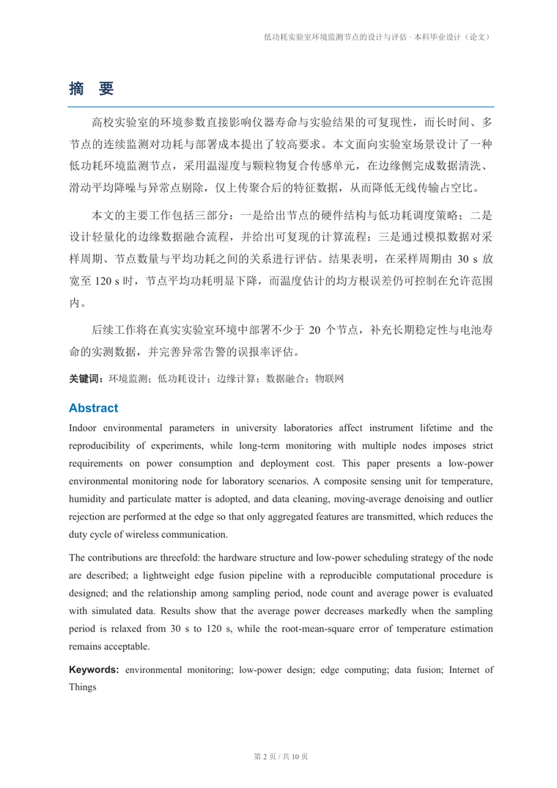
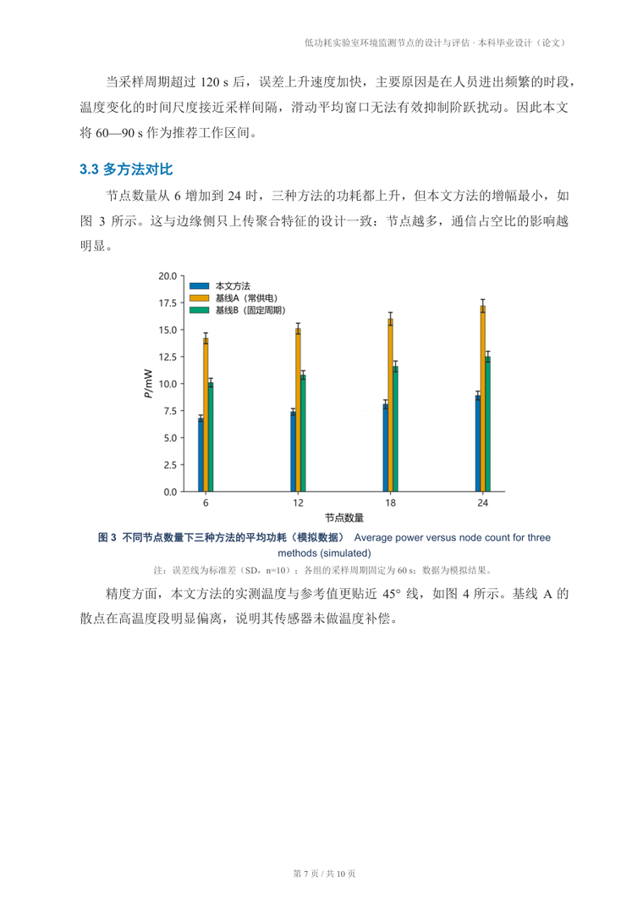
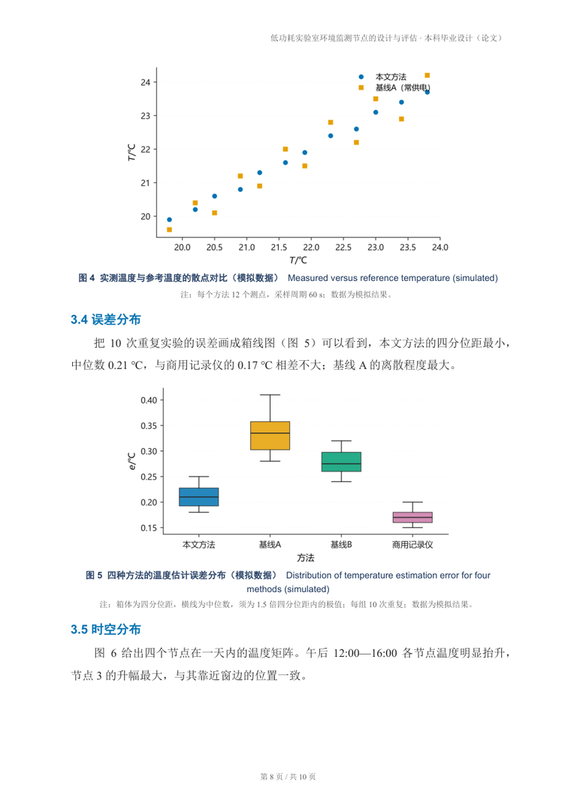
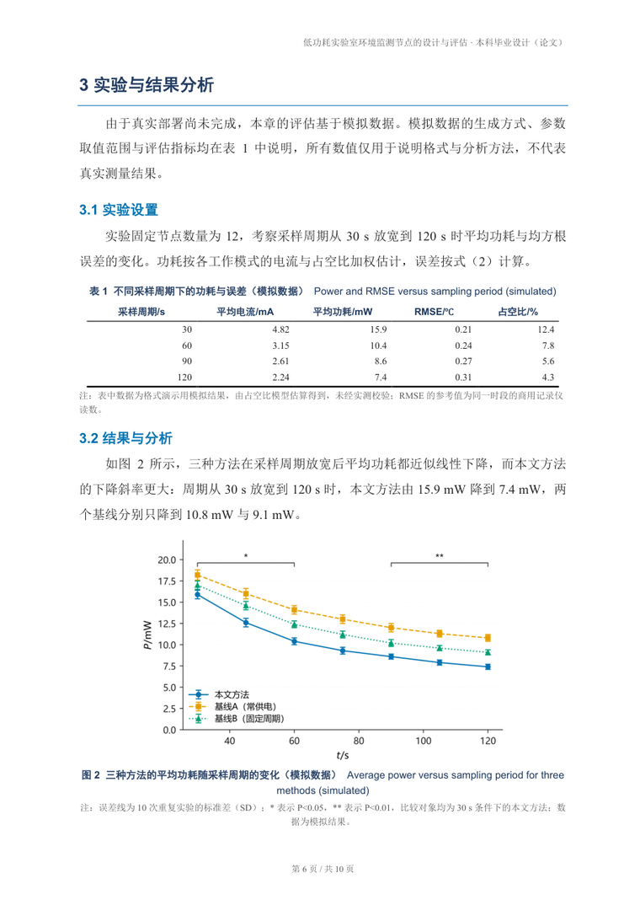

让模型"写个 Word"最常见的翻车点，这里全部固化掉了。
只设了 w:ascii，中文实际走主题字体。这里写入前会清掉 asciiTheme。
用 firstLineChars=200 精确两字符，并避开与悬挂缩进的属性冲突。
顶/底线 1.5 pt、表头线 1 pt、无竖线，表头跨页重复、行不拆分。
LaTeX 子集直接转成 Word 原生 OMML，双击可编辑，编号右对齐。
插入真正的 TOC \o "1-1" 域，用 Word 更新页码，改正文不会错位。
最后一次保存后再写 w:view=print + 100%，默认就是页面视图。
w:hanging 单位坑（EMU 当 twips）已修复，9 pt + 0.74 cm 悬挂缩进。
图表编号由脚本接管，重排后自动连续；正文引用缺失会被质检标出来。
下面全部由 examples/demo/content_model.json 自动生成，未做人工排版。





安装 = 把整个仓库文件夹放进 skills 目录（名字保持 academic-paper-docx）。
支持 ~/.dsh/skills/（DSH）、~/.codex/skills/（Codex）、
~/.claude/skills/；不想用 git 就 Download ZIP 后把解压出的文件夹整体放进去。
装完重启 agent 即可。详见
README 的安装章节。
# 1) 装进 agent 的 skills 目录（DSH / Codex / Claude 通用） git clone https://github.com/Znk1314/academic-paper-docx ~/.dsh/skills/academic-paper-docx python -m pip install -r ~/.dsh/skills/academic-paper-docx/requirements.txt python ~/.dsh/skills/academic-paper-docx/scripts/apd.py doctor # 自检 # 2) 写内容模型 → 生成 docx python scripts/apd.py build work/content.json -o work/report.docx # 3) 更新目录/域 + 导 PDF + 质检（Windows + Word 最完整） python scripts/apd.py post work/report.docx python scripts/apd.py qa work/report.docx --pdf work/report.pdf
也可以用 python scripts/apd.py demo -o build/demo 一次跑完整流程。
| 项目 | 值 |
|---|---|
| 纸张 / 页边距 | A4，上 2.4 / 下 2.2 / 左 2.6 / 右 2.4 cm |
| 正文 | 宋体 + Times New Roman，12 pt，1.5 倍行距，首行 2 字符 |
| 一级标题 | 黑体 16 pt 粗体 #1F3A5F，下边框 0.75 pt #0072B2 |
| 二级标题 | 黑体 13 pt 粗体 #0072B2 |
| 三线表 | 顶/底线 1.5 pt，表头线 1 pt，无竖线，表头跨页重复 |
| 图 / 表题 | 9.5 pt 粗体 #1F3A5F；图题在下、表题在上 |
| 公式 | OMML 居中，编号 （1） 右对齐 |
| 目录 | TOC \o "1-1" \h \z \u，只显示一级标题 |
| 页眉 / 页脚 | 8.5 pt 右对齐 / 8 pt 居中 第 X 页 / 共 Y 页 |
| 参考文献 | 9 pt，悬挂缩进 0.74 cm，GB/T 7714 |
| 默认视图 | w:view=print，缩放 100% |
格式库：页面、样式、封面、目录域、三线表、图、公式、页眉页脚、print 视图。
LaTeX 子集 → OMML，零外部依赖。
35 项规范检查，输出 OK / WARN / FAIL。
Word COM 更新域与目录、导 PDF，再固定页面视图。
Okabe-Ito 配色图表，按 300 dpi 反算字号，无需 matplotlib。
PDF 逐页 PNG，检出空白页与未定义书签。